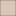

<!doctype html>
<html lang="en">
    <head>
        <meta charset="utf-8">
        <meta http-equiv="X-UA-Compatible" content="IE=edge">
        <meta name="viewport" content="initial-scale=1,user-scalable=no,maximum-scale=1,width=device-width">
        <meta name="mobile-web-app-capable" content="yes">
        <meta name="apple-mobile-web-app-capable" content="yes">
        <link rel="stylesheet" href="css/leaflet.css">
        <link rel="stylesheet" href="css/L.Control.Layers.Tree.css">
        <link rel="stylesheet" href="css/qgis2web.css">
        <link rel="stylesheet" href="css/fontawesome-all.min.css">
        <link rel="stylesheet" href="css/leaflet-measure.css">
        <style>
        html, body, #map {
            width: 100%;
            height: 100%;
            padding: 0;
            margin: 0;
        }
        </style>
        <title>Higiene Urbana</title>
        <!-- Icono -->
        <link rel="icon" href="./images/favicon1.ico">
    </head>
    <body>
        <div id="map">
        </div>
        <script src="js/qgis2web_expressions.js"></script>
        <script src="js/leaflet.js"></script>
        <script src="js/L.Control.Layers.Tree.min.js"></script>
        <script src="js/multi-style-layer.js"></script>
        <script src="js/leaflet.rotatedMarker.js"></script>
        <script src="js/leaflet.pattern.js"></script>
        <script src="js/leaflet-hash.js"></script>
        <script src="js/Autolinker.min.js"></script>
        <script src="js/rbush.min.js"></script>
        <script src="js/labelgun.min.js"></script>
        <script src="js/labels.js"></script>
        <script src="js/leaflet-measure.js"></script>
        <script src="data/ANEXO3_1.js"></script>
        <script src="data/ZONA2_2.js"></script>
        <script src="data/ZONA1_3.js"></script>
        <script>
        var map = L.map('map', {
            zoomControl:false, maxZoom:28, minZoom:1
        })
        var hash = new L.Hash(map);
        map.attributionControl.setPrefix('<a href="https://github.com/tomchadwin/qgis2web" target="_blank">qgis2web</a> &middot; <a href="https://leafletjs.com" title="A JS library for interactive maps">Leaflet</a> &middot; <a href="https://qgis.org">QGIS</a>');
        var autolinker = new Autolinker({truncate: {length: 30, location: 'smart'}});
        // remove popup's row if "visible-with-data"
        function removeEmptyRowsFromPopupContent(content, feature) {
         var tempDiv = document.createElement('div');
         tempDiv.innerHTML = content;
         var rows = tempDiv.querySelectorAll('tr');
         for (var i = 0; i < rows.length; i++) {
             var td = rows[i].querySelector('td.visible-with-data');
             var key = td ? td.id : '';
             if (td && td.classList.contains('visible-with-data') && feature.properties[key] == null) {
                 rows[i].parentNode.removeChild(rows[i]);
             }
         }
         return tempDiv.innerHTML;
        }
        // add class to format popup if it contains media
		function addClassToPopupIfMedia(content, popup) {
			var tempDiv = document.createElement('div');
			tempDiv.innerHTML = content;
			if (tempDiv.querySelector('td img')) {
				popup._contentNode.classList.add('media');
					// Delay to force the redraw
					setTimeout(function() {
						popup.update();
					}, 10);
			} else {
				popup._contentNode.classList.remove('media');
			}
		}
        var zoomControl = L.control.zoom({
            position: 'topleft'
        }).addTo(map);
        var measureControl = new L.Control.Measure({
            position: 'topleft',
            primaryLengthUnit: 'meters',
            secondaryLengthUnit: 'kilometers',
            primaryAreaUnit: 'sqmeters',
            secondaryAreaUnit: 'hectares'
        });
        measureControl.addTo(map);
        document.getElementsByClassName('leaflet-control-measure-toggle')[0].innerHTML = '';
        document.getElementsByClassName('leaflet-control-measure-toggle')[0].className += ' fas fa-ruler';
        var bounds_group = new L.featureGroup([]);
        function setBounds() {
            if (bounds_group.getLayers().length) {
                map.fitBounds(bounds_group.getBounds());
            }
        }
        map.createPane('pane_OSMStandard_0');
        map.getPane('pane_OSMStandard_0').style.zIndex = 400;
        var layer_OSMStandard_0 = L.tileLayer('http://tile.openstreetmap.org/{z}/{x}/{y}.png', {
            pane: 'pane_OSMStandard_0',
            opacity: 1.0,
            attribution: '<a href="https://www.openstreetmap.org/copyright">© OpenStreetMap contributors, CC-BY-SA</a>',
            minZoom: 1,
            maxZoom: 28,
            minNativeZoom: 0,
            maxNativeZoom: 19
        });
        layer_OSMStandard_0;
        map.addLayer(layer_OSMStandard_0);
        function pop_ANEXO3_1(feature, layer) {
            var popupContent = '<table>\
                    <tr>\
                        <td colspan="2"><strong>SECTOR</strong><br />' + (feature.properties['SECTOR'] !== null ? autolinker.link(String(feature.properties['SECTOR']).replace(/'/g, '\'').toLocaleString()) : '') + '</td>\
                    </tr>\
                    <tr>\
                        <td colspan="2"><strong>ACTIVIDAD</strong><br />' + (feature.properties['ACTIVIDAD'] !== null ? autolinker.link(String(feature.properties['ACTIVIDAD']).replace(/'/g, '\'').toLocaleString()) : '') + '</td>\
                    </tr>\
                    <tr>\
                        <td colspan="2"><strong>ENCARGADO</strong><br />' + (feature.properties['ENCARGADO'] !== null ? autolinker.link(String(feature.properties['ENCARGADO']).replace(/'/g, '\'').toLocaleString()) : '') + '</td>\
                    </tr>\
                </table>';
            var content = removeEmptyRowsFromPopupContent(popupContent, feature);
			layer.on('popupopen', function(e) {
				addClassToPopupIfMedia(content, e.popup);
			});
			layer.bindPopup(content, { maxHeight: 400 });
        }

        var pattern_ANEXO3_1_0 = new L.StripePattern({
            weight: 0.9,
            spaceWeight: 2.0,
            color: '#ff2206',
            opacity: 1.0,
            spaceOpacity: 0,
            angle: 315
        });
        pattern_ANEXO3_1_0.addTo(map);
        function style_ANEXO3_1_0() {
            return {
                pane: 'pane_ANEXO3_1',
                stroke: false,
                fillOpacity: 1,
                fillPattern: pattern_ANEXO3_1_0,
                interactive: true,
            }
        }
        function style_ANEXO3_1_1() {
            return {
                pane: 'pane_ANEXO3_1',
                opacity: 1,
                color: 'rgba(255,34,6,1.0)',
                dashArray: '',
                lineCap: 'square',
                lineJoin: 'bevel',
                weight: 4.0,
                fillOpacity: 0,
                interactive: true,
            }
        }
        map.createPane('pane_ANEXO3_1');
        map.getPane('pane_ANEXO3_1').style.zIndex = 401;
        map.getPane('pane_ANEXO3_1').style['mix-blend-mode'] = 'normal';
        var layer_ANEXO3_1 = new L.geoJson.multiStyle(json_ANEXO3_1, {
            attribution: '',
            interactive: true,
            dataVar: 'json_ANEXO3_1',
            layerName: 'layer_ANEXO3_1',
            pane: 'pane_ANEXO3_1',
            onEachFeature: pop_ANEXO3_1,
            styles: [style_ANEXO3_1_0,style_ANEXO3_1_1,]
        });
        bounds_group.addLayer(layer_ANEXO3_1);
        map.addLayer(layer_ANEXO3_1);
        function pop_ZONA2_2(feature, layer) {
            var popupContent = '<table>\
                    <tr>\
                        <td colspan="2"><strong>SECTOR</strong><br />' + (feature.properties['SECTOR'] !== null ? autolinker.link(String(feature.properties['SECTOR']).replace(/'/g, '\'').toLocaleString()) : '') + '</td>\
                    </tr>\
                    <tr>\
                        <td colspan="2"><strong>SERVICIO</strong><br />' + (feature.properties['SERVICIO'] !== null ? autolinker.link(String(feature.properties['SERVICIO']).replace(/'/g, '\'').toLocaleString()) : '') + '</td>\
                    </tr>\
                    <tr>\
                        <td colspan="2"><strong>ENCARGADO</strong><br />' + (feature.properties['ENCARGADO'] !== null ? autolinker.link(String(feature.properties['ENCARGADO']).replace(/'/g, '\'').toLocaleString()) : '') + '</td>\
                    </tr>\
                </table>';
            var content = removeEmptyRowsFromPopupContent(popupContent, feature);
			layer.on('popupopen', function(e) {
				addClassToPopupIfMedia(content, e.popup);
			});
			layer.bindPopup(content, { maxHeight: 400 });
        }

        function style_ZONA2_2_0() {
            return {
                pane: 'pane_ZONA2_2',
                opacity: 1,
                color: 'rgba(35,35,35,1.0)',
                dashArray: '',
                lineCap: 'butt',
                lineJoin: 'miter',
                weight: 1.0, 
                fill: true,
                fillOpacity: 0.6,
                fillColor: 'rgba(152,125,183,1.0)',
                interactive: true,
            }
        }
        map.createPane('pane_ZONA2_2');
        map.getPane('pane_ZONA2_2').style.zIndex = 402;
        map.getPane('pane_ZONA2_2').style['mix-blend-mode'] = 'normal';
        var layer_ZONA2_2 = new L.geoJson(json_ZONA2_2, {
            attribution: '',
            interactive: true,
            dataVar: 'json_ZONA2_2',
            layerName: 'layer_ZONA2_2',
            pane: 'pane_ZONA2_2',
            onEachFeature: pop_ZONA2_2,
            style: style_ZONA2_2_0,
        });
        bounds_group.addLayer(layer_ZONA2_2);
        map.addLayer(layer_ZONA2_2);
        function pop_ZONA1_3(feature, layer) {
            var popupContent = '<table>\
                    <tr>\
                        <td colspan="2"><strong>SECTOR</strong><br />' + (feature.properties['SECTOR'] !== null ? autolinker.link(String(feature.properties['SECTOR']).replace(/'/g, '\'').toLocaleString()) : '') + '</td>\
                    </tr>\
                    <tr>\
                        <td colspan="2"><strong>SERVICIO</strong><br />' + (feature.properties['SERVICIO'] !== null ? autolinker.link(String(feature.properties['SERVICIO']).replace(/'/g, '\'').toLocaleString()) : '') + '</td>\
                    </tr>\
                    <tr>\
                        <td colspan="2"><strong>ENCARGADO</strong><br />' + (feature.properties['ENCARGADO'] !== null ? autolinker.link(String(feature.properties['ENCARGADO']).replace(/'/g, '\'').toLocaleString()) : '') + '</td>\
                    </tr>\
                </table>';
            var content = removeEmptyRowsFromPopupContent(popupContent, feature);
			layer.on('popupopen', function(e) {
				addClassToPopupIfMedia(content, e.popup);
			});
			layer.bindPopup(content, { maxHeight: 400 });
        }

        function style_ZONA1_3_0() {
            return {
                pane: 'pane_ZONA1_3',
                opacity: 1,
                color: 'rgba(35,35,35,1.0)',
                dashArray: '',
                lineCap: 'butt',
                lineJoin: 'miter',
                weight: 1.0, 
                fill: true,
                fillOpacity: 0.6,
                fillColor: 'rgba(164,113,88,1.0)',
                interactive: true,
            }
        }
        map.createPane('pane_ZONA1_3');
        map.getPane('pane_ZONA1_3').style.zIndex = 403;
        map.getPane('pane_ZONA1_3').style['mix-blend-mode'] = 'normal';
        var layer_ZONA1_3 = new L.geoJson(json_ZONA1_3, {
            attribution: '',
            interactive: true,
            dataVar: 'json_ZONA1_3',
            layerName: 'layer_ZONA1_3',
            pane: 'pane_ZONA1_3',
            onEachFeature: pop_ZONA1_3,
            style: style_ZONA1_3_0,
        });
        bounds_group.addLayer(layer_ZONA1_3);
        map.addLayer(layer_ZONA1_3);
        var overlaysTree = [
            {label: ' ZONA 1', layer: layer_ZONA1_3},
            {label: ' ZONA 2', layer: layer_ZONA2_2},
            {label: ' ANEXO 3', layer: layer_ANEXO3_1},
            {label: "OSM Standard", layer: layer_OSMStandard_0, radioGroup: 'bm' },]
        var lay = L.control.layers.tree(null, overlaysTree,{
            //namedToggle: true,
            //selectorBack: false,
            //closedSymbol: '&#8862; &#x1f5c0;',
            //openedSymbol: '&#8863; &#x1f5c1;',
            //collapseAll: 'Collapse all',
            //expandAll: 'Expand all',
            collapsed: true,
        });
        lay.addTo(map);
        setBounds();
        </script>
    </body>
</html>
